MERFISH mouse liver dataset and considerations of large data
Lambda Moses
2024-05-07
Source:vignettes/vig6_merfish.Rmd
vig6_merfish.RmdIntroduction
The SpatialFeatureExperiment (SFE) and
Voyager packages were originally developed around a
relatively small Visium dataset as a proof of concept, and were hence
not originally optimized for very large datasets. However, larger smFISH
datasets with hundreds of thousands, sometimes over a million cells have
already been produced and will soon be produced routinely. Among studies
using smFISH-based spatial transcriptomics technologies that reported
the number of cells per dataset, the number of cells per dataset has
increased in the past years (Moses and Pachter
2022). 
In anticipation of large datasets, this vignette was produced using limited GitHub Actions resources (MacOS), which are 14 GB of RAM with 3 CPU cores and 14 GB of disk space, comparable to laptops. We therefore expect that the analyses in this vignette should scale to reasonably sized datasets.
The dataset we use in this vignette is a MERFISH mouse liver dataset
downloaded from the Vizgen
website. We will use it to discuss some issues with large datasets
and some upcoming features in the next release of Voyager.
The gene count matrix and cell metadata (including centroid coordinates)
were downloaded as CSV files and read into R. While 7 z-planes were
imaged, cell segmentation is only available in one z-plane. The cell
polygons are in HDF5 files, with one HDF5 file per field of view (FOV),
and there are over 1000 FOVs in this dataset. Converting these HDF5
files into an sf data frame is not trivial. See the vignette
on creating a SpatialFeatureExperiment (SFE) object for
code used to do the conversion, and the polygons are included in the SFE
object. The cell metadata already has cell volume. If the polygons are
not used in the analyses, and the polygons can’t be seen on a static
plot with hundreds of thousands of cells anyway, then doing the
conversion is optional. While the transcript spot locations are
available, we cannot yet work with such a large point dataset.
Here we load the packages used.
library(Voyager)
library(SFEData)
library(SingleCellExperiment)
library(SpatialExperiment)
library(scater)
library(ggplot2)
library(patchwork)
library(stringr)
library(spdep)
library(BiocParallel)
library(BiocSingular)
library(gstat)
library(BiocNeighbors)
library(sf)
library(automap)
theme_set(theme_bw())
(sfe <- VizgenLiverData())
#> see ?SFEData and browseVignettes('SFEData') for documentation
#> loading from cache
#> require("SpatialFeatureExperiment")
#> class: SpatialFeatureExperiment
#> dim: 385 395215
#> metadata(0):
#> assays(1): counts
#> rownames(385): Comt Ldha ... Blank-36 Blank-37
#> rowData names(3): means vars cv2
#> colnames(395215): 10482024599960584593741782560798328923
#> 111551578131181081835796893618918348842 ...
#> 92389687374928708938472537234969690424
#> 96399783859933548456002372694492036651
#> colData names(9): fov volume ... nCounts nGenes
#> reducedDimNames(0):
#> mainExpName: NULL
#> altExpNames(0):
#> spatialCoords names(2) : center_x center_y
#> imgData names(1): sample_id
#>
#> unit: full_res_image_pixels
#> Geometries:
#> colGeometries: centroids (POINT), cellSeg (POLYGON)
#>
#> Graphs:
#> sample01:There are 395,215 cells in this dataset. Plotting them all as polygons takes a while, but it isn’t too bad.
plotGeometry(sfe, "cellSeg")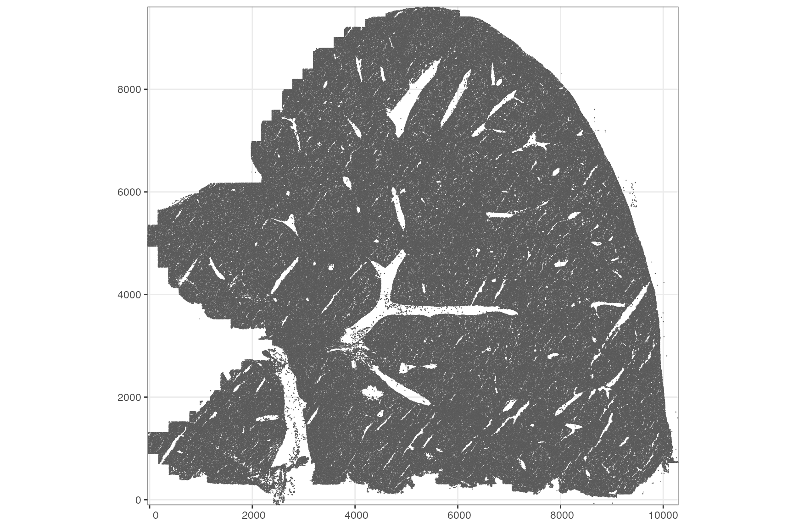
However, we do not wish to save this plot as PDF. To avoid this
problem, we can either use the scattermore = TRUE argument
in plotSpatialFeature() and plot the centroids since the
polygons are hard to see anyway.
Cell density can be vaguely seen in the plot above. Here we count the number of cells in bins to better visualize cell density.
plotCellBin2D(sfe, bins = 300, hex = TRUE)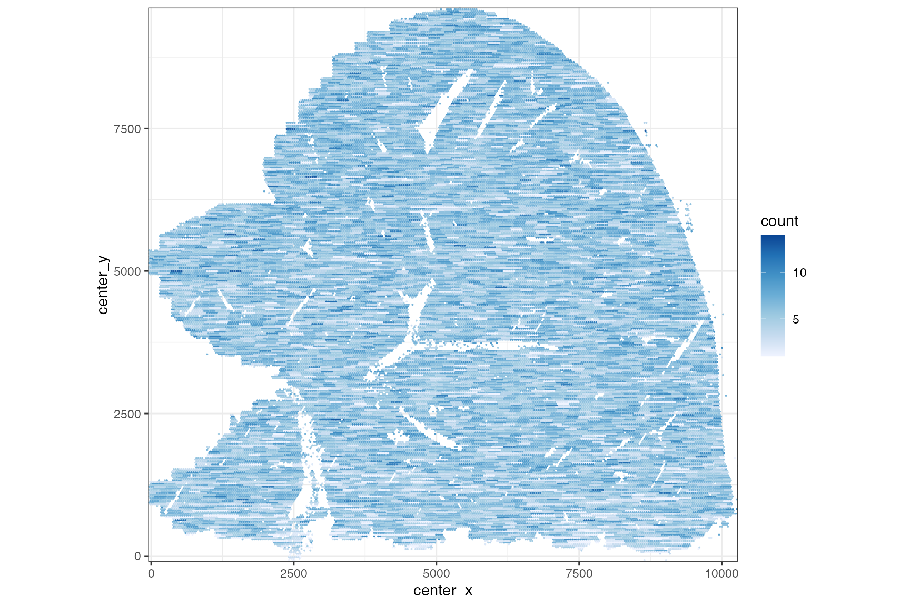
Cell density is for the most part homogeneous but shows some structure with denser regions that seem to relate to the blood vessels.
Quality control
names(colData(sfe))
#> [1] "fov" "volume" "min_x" "max_x" "min_y" "max_y"
#> [7] "sample_id" "nCounts" "nGenes"Plotting almost 400,000 polygons is kind of slow but doable.
system.time(
print(plotSpatialFeature(sfe, "nCounts", colGeometryName = "cellSeg"))
)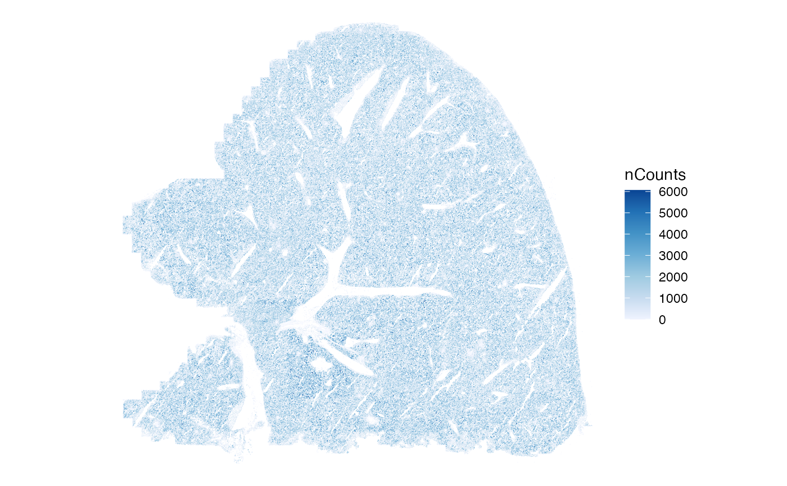
#> user system elapsed
#> 16.264 0.728 16.993Here nCounts kind of looks like salt and pepper. Using the scattermore
package can speed up plotting a large number of points. In this
non-interactive plot, the cell polygons are too small to see anyway, so
plotting cell centroid points should be fine.
system.time({
print(plotSpatialFeature(sfe, "nCounts", colGeometryName = "centroids",
scattermore = TRUE))
})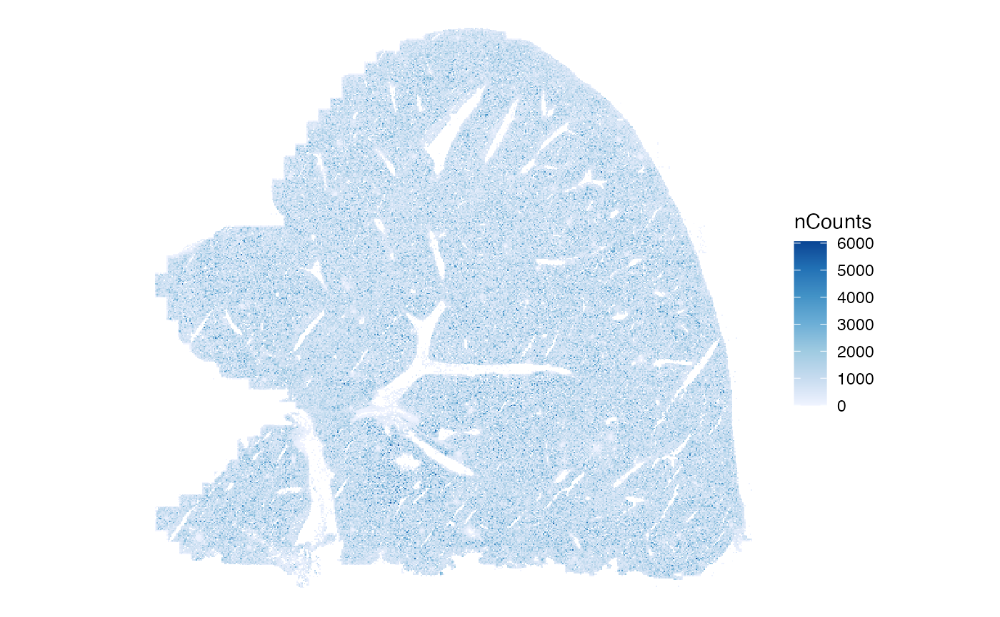
#> user system elapsed
#> 1.353 0.147 1.500When run on our server, plotting almost 400,000 polygons took around
23 seconds, while using geom_scattermore()
(scattermore = TRUE) took about 2 seconds. Since
geom_scattermore() rasterizes the plot, the plot will be
pixelated when zoomed in.
While interactive data visualization is useful for ESDA, there is a need for static figures in publications. As of Voyager 1.2.0 (Bioconductor 3.17), a bounding box can be specified to zoom into the data.
bbox_use <- c(xmin = 3000, xmax = 3500, ymin = 2500, ymax = 3000)
plotSpatialFeature(sfe, "nCounts", colGeometryName = "cellSeg", bbox = bbox_use)
Much of the time making this plot is spent subsetting the
sf data frame with the bounding box. Here, spatial
autocorrelation is evident in the upper right region with smaller cells,
but less so in the rest of this patch. nCounts seems to be related to
cell size; larger cells seem to have more total counts.
Interactive data visualization is currently beyond the scope of
Voyager or this vignette. There are existing tools for
interactive visualization of highly multiplexed imaging data, such as MERmaid
(G. Wang et al. 2020) for MERFISH data, TissUUmaps
(Behanova et al. 2023), Visinity
(Warchol et al. 2023), and the samui broswer (Sriworarat et al. 2023).
Since there aren’t too many genes, all genes and negative control probes can be displayed:
rownames(sfe)
#> [1] "Comt" "Ldha" "Pck1" "Akr1a1"
#> [5] "Ugt2b1" "Acsl5" "Ugt2a3" "Igf1"
#> [9] "Errfi1" "Serping1" "Adh4" "Hsd17b2"
#> [13] "Tpi1" "Cyp1a2" "Acsl1" "Akr1d1"
#> [17] "Alas1" "Aldh7a1" "G6pc" "Hsd17b12"
#> [21] "Pdhb" "Gpd1" "Cyp7b1" "Pgam1"
#> [25] "Hc" "Dld" "Cyp2c23" "Proz"
#> [29] "Acss2" "Psap" "Cald1" "Hsd3b3"
#> [33] "Galm" "Cxcl12" "Sardh" "Cebpa"
#> [37] "Aldh3a2" "Gck" "Sdc1" "Pdha1"
#> [41] "Npc2" "Hsd17b6" "Aqp1" "Adh7"
#> [45] "Smpdl3a" "Egfr" "Pgm1" "Fasn"
#> [49] "Ctsc" "Abcb4" "Fyb" "Alas2"
#> [53] "Gpi1" "Fech" "Lsr" "Psmd3"
#> [57] "Gm2a" "Pabpc1" "Cbr4" "Tkt"
#> [61] "Tmem56" "Eif3f" "Cxadr" "Srd5a1"
#> [65] "Cyp2c55" "Gnai2" "Gimap6" "Hsd3b2"
#> [69] "Grn" "Rpp14" "Csnk1a1" "Egr1"
#> [73] "Mpeg1" "Acsl4" "Hmgb1" "Mpp1"
#> [77] "Lcp1" "Plvap" "Aldh1b1" "Oxsm"
#> [81] "Dlat" "Csk" "Mcat" "Hsd17b7"
#> [85] "Epas1" "Eif3a" "Nrp1" "Dek"
#> [89] "H2afy" "Bpgm" "Hsd3b6" "Dnase1l3"
#> [93] "Serpinh1" "Tinagl1" "Aldoc" "Cyp2c38"
#> [97] "Dpt" "Mrc1" "Minpp1" "Fgf1"
#> [101] "Alcam" "Gimap4" "Cav2" "Eng"
#> [105] "Adgre1" "Shisa5" "Csf1r" "Esam"
#> [109] "Unc93b1" "Cnp" "Clec14a" "Kdr"
#> [113] "Adpgk" "Gca" "Pkm" "Mkrn1"
#> [117] "Sdc3" "Acaca" "Gpr182" "Bmp2"
#> [121] "Tfrc" "Timp3" "Calcrl" "Pfkl"
#> [125] "Wnt2" "Cybb" "Icam1" "Cdh5"
#> [129] "Sgms2" "Cd48" "Stk17b" "Tubb6"
#> [133] "Vcam1" "Hgf" "Ramp1" "Arsb"
#> [137] "Pld4" "Smarca4" "Fstl1" "Pfkm"
#> [141] "Lhfp" "Lmna" "Cd300lg" "Laptm5"
#> [145] "Timp2" "Slc25a37" "Fzd7" "Lyve1"
#> [149] "Acacb" "Cyp1a1" "Eno3" "Cd83"
#> [153] "Epcam" "Ltbp4" "Pgm2" "Mertk"
#> [157] "Pth1r" "Itga2b" "Kctd12" "Srd5a3"
#> [161] "Bmp5" "Pecam1" "G6pc3" "Cyp17a1"
#> [165] "Stab2" "Cygb" "Col1a2" "Nid1"
#> [169] "Cd44" "Ctnnal1" "Ephb4" "Elk3"
#> [173] "Foxq1" "Cxcl14" "Fzd4" "Itgb2"
#> [177] "Tcf7" "Srd5a2" "Aldh3b1" "Flt4"
#> [181] "Selp" "Rbpj" "Ep300" "Rhoj"
#> [185] "Fzd1" "Tcf7l2" "Ssh2" "Col6a1"
#> [189] "Notch2" "Tcf4" "Tek" "Trim47"
#> [193] "Tent5c" "Ncf1" "Lepr" "Pck2"
#> [197] "Lmnb1" "Selplg" "Myh10" "Aldoart1"
#> [201] "Podxl" "Kitl" "Tcf3" "Tspan13"
#> [205] "Dll4" "Fzd8" "Lad1" "Procr"
#> [209] "Ccr2" "Akr1c18" "Maml1" "Ms4a1"
#> [213] "Hk3" "Bcam" "Fzd5" "Dkk3"
#> [217] "Bank1" "Itgal" "Pgam2" "Axin2"
#> [221] "Pfkp" "Meis2" "Jag1" "Gimap3"
#> [225] "Rassf4" "Notch1" "Cd93" "Tet2"
#> [229] "Tcf7l1" "Cd34" "Hvcn1" "Mal"
#> [233] "Itgb7" "Wnt4" "Kit" "Gapdhs"
#> [237] "Kcnj16" "Tnfrsf13c" "Hk1" "Pdgfra"
#> [241] "Apobec3" "Slc34a2" "Vav1" "Lamp3"
#> [245] "Meis1" "Lck" "Efnb2" "Notch4"
#> [249] "Klrb1c" "Angpt2" "Vwf" "E2f2"
#> [253] "Ccr1" "Angpt1" "B4galt6" "Cyp21a1"
#> [257] "Pdpn" "Dll1" "Ammecr1" "Csf3r"
#> [261] "Ndn" "Fgf2" "Runx1" "Mpl"
#> [265] "Mecom" "Itgam" "Hoxb4" "Tox"
#> [269] "Prickle2" "Acss1" "Cyp2b9" "Aldh3a1"
#> [273] "Bmp7" "Gata2" "Il7r" "Satb1"
#> [277] "Sfrp1" "Eno2" "Mrvi1" "Mki67"
#> [281] "Nes" "Tmod1" "Ace" "Gfap"
#> [285] "Tgfb2" "Tomt" "Flt3" "Sult2b1"
#> [289] "Hkdc1" "Notch3" "Cdh11" "Il6"
#> [293] "Hk2" "Mmrn1" "Vangl2" "Pou2af1"
#> [297] "Hoxb5" "Jag2" "Aldh3b2" "Gypa"
#> [301] "Lrp2" "Lef1" "Olr1" "Lox"
#> [305] "Txlnb" "Slc12a1" "Aldh3b3" "Cxcr2"
#> [309] "Nkd2" "Sult1e1" "Acsl6" "Ddx4"
#> [313] "Ldhc" "Kcnj1" "Acsbg1" "Fzd3"
#> [317] "F13a1" "Hsd11b2" "Dkk2" "Hsd17b1"
#> [321] "Fzd2" "Cyp2b23" "Eno4" "Celsr2"
#> [325] "Obscn" "Slamf1" "Akap14" "Gnaz"
#> [329] "Cd177" "Tet1" "Cspg4" "Aldoart2"
#> [333] "Cyp2b19" "Ryr2" "Ldhal6b" "Acsf3"
#> [337] "Chodl" "Ivl" "Cyp11b1" "Sfrp2"
#> [341] "Dkk1" "Cyp11a1" "1700061G19Rik" "Acsbg2"
#> [345] "Olah" "Pdha2" "Hsd17b3" "Blank-0"
#> [349] "Blank-1" "Blank-2" "Blank-3" "Blank-4"
#> [353] "Blank-5" "Blank-6" "Blank-7" "Blank-8"
#> [357] "Blank-9" "Blank-10" "Blank-11" "Blank-12"
#> [361] "Blank-13" "Blank-14" "Blank-15" "Blank-16"
#> [365] "Blank-17" "Blank-18" "Blank-19" "Blank-20"
#> [369] "Blank-21" "Blank-22" "Blank-23" "Blank-24"
#> [373] "Blank-25" "Blank-26" "Blank-27" "Blank-28"
#> [377] "Blank-29" "Blank-30" "Blank-31" "Blank-32"
#> [381] "Blank-33" "Blank-34" "Blank-35" "Blank-36"
#> [385] "Blank-37"The number of real genes is 347.
n_panel <- 347Next, we plot the distribution of nCounts divided by the number of genes in the panel, so this distribution is more comparable across datasets with different numbers of genes.
colData(sfe)$nCounts_normed <- sfe$nCounts / n_panel
colData(sfe)$nGenes_normed <- sfe$nGenes / n_panel
plotColDataHistogram(sfe, c("nCounts_normed", "nGenes_normed"))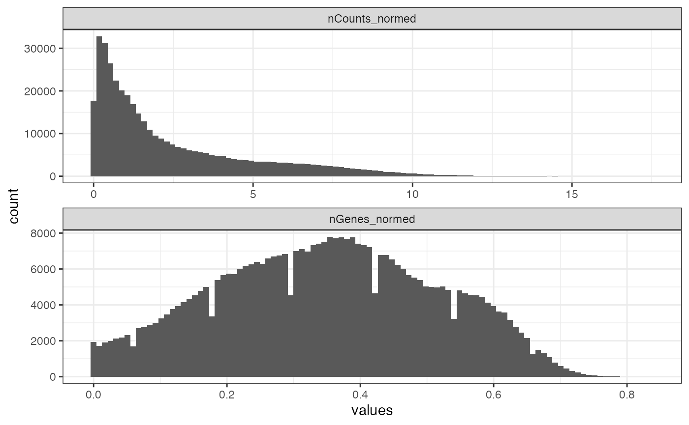
As with the Xenium dataset, there are mysterious regular notches in the histogram of the number of genes detected.
We also plot the number of genes detected per cell, with
geom_scattermore().
plotSpatialFeature(sfe, "nGenes", colGeometryName = "centroids", scattermore = TRUE)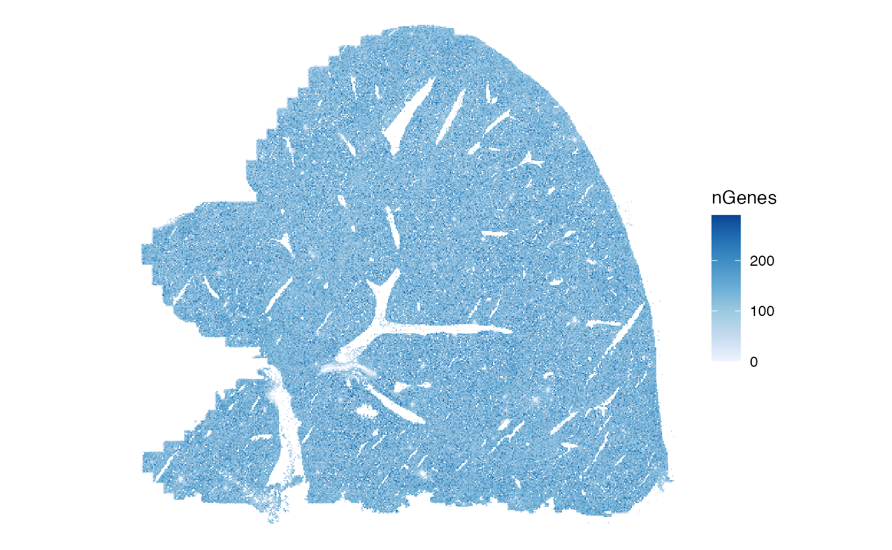
Similarly to nCounts, the points look intermingled.
Distribution of cell volume in space:
plotSpatialFeature(sfe, "volume", colGeometryName = "centroids", scattermore = TRUE)Next, we explore how nCounts relates to nGenes:
plotColData(sfe, x="nCounts", y="nGenes", bins = 100)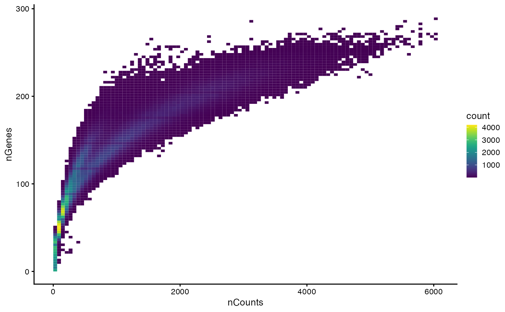
There are two branches in this plot.
How does cell size relate to nCounts?
plotColData(sfe, x="volume", y="nCounts", bins = 100)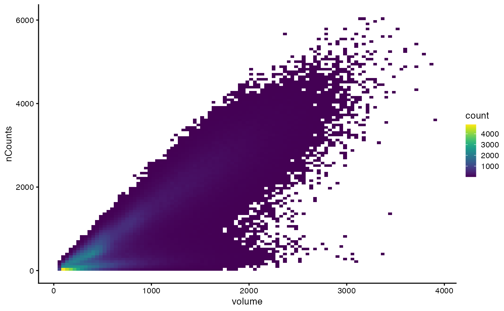
The lower branch has the larger cells that don’t tend to have more total counts, and the upper branch has larger cells that tend to have more total counts.
We also examine how cell size relates to number of genes detected:
plotColData(sfe, x="volume", y="nGenes", bins = 100)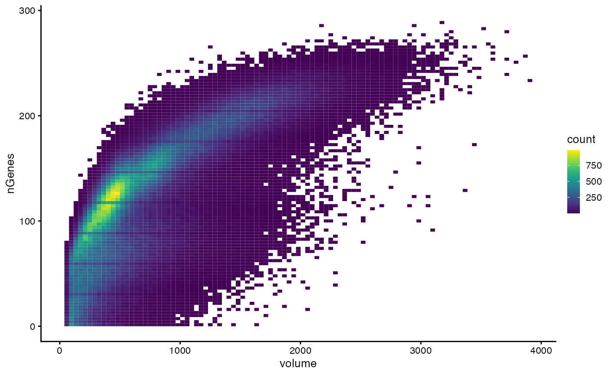
There seem to be clusters that are possibly related to cell type.
Negative controls
Blank probes are used as negative controls.
is_blank <- str_detect(rownames(sfe), "^Blank-")
sfe <- addPerCellQCMetrics(sfe, subset = list(blank = is_blank))
names(colData(sfe))
#> [1] "fov" "volume" "min_x"
#> [4] "max_x" "min_y" "max_y"
#> [7] "sample_id" "nCounts" "nGenes"
#> [10] "nCounts_normed" "nGenes_normed" "sum"
#> [13] "detected" "subsets_blank_sum" "subsets_blank_detected"
#> [16] "subsets_blank_percent" "total"Total transcript counts from the blank probes:
plotSpatialFeature(sfe, "subsets_blank_sum", colGeometryName = "centroids",
scattermore = TRUE)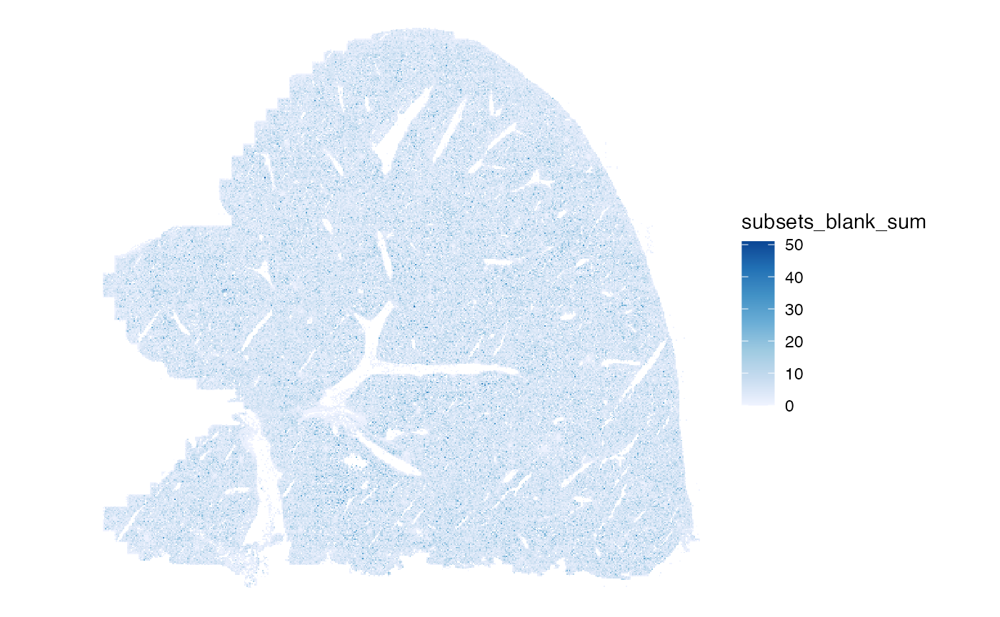
Number of blank features detected per cell:
plotSpatialFeature(sfe, "subsets_blank_detected", colGeometryName = "centroids",
scattermore = TRUE)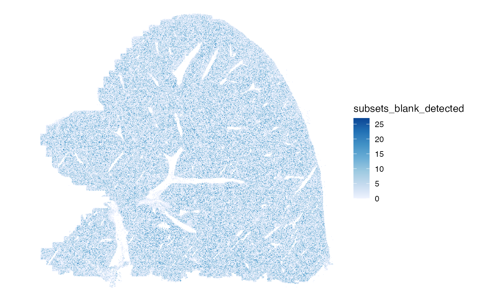
Percentage of blank features per cell:
plotSpatialFeature(sfe, "subsets_blank_percent", colGeometryName = "centroids",
scattermore = TRUE)
The percentage is more interesting: within the tissue, cells with high percentage of blank counts are scattered like salt and pepper, but more of these cells are on the left edge of the tissue, the edges of FOVs, where the tissue itself doesn’t end.
Also plot histograms:
plotColDataHistogram(sfe, paste0("subsets_blank_", c("sum", "detected", "percent")))
#> Warning: Removed 1332 rows containing non-finite outside the scale range
#> (`stat_bin()`).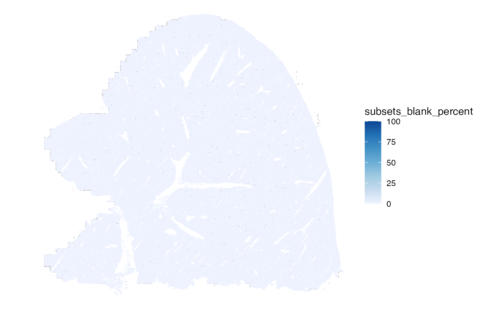
The NA’s are cells without any transcript detected.
mean(sfe$subsets_blank_sum > 0)
#> [1] 0.7648799Unlike in the Xenium dataset, here most cells have at least one blank count. By log transforming, the zeroes are removed from the plot.
plotColDataHistogram(sfe, "subsets_blank_percent") +
scale_x_log10() +
annotation_logticks()
#> Warning in scale_x_log10(): log-10 transformation introduced
#> infinite values.
#> Warning: Removed 92923 rows containing non-finite outside the scale range
#> (`stat_bin()`).
A small percentage of blank counts is acceptable. So we will remove the outlier based on the distribution of the percentage when it’s greater than zero. How does the blank percentage relate to total counts?
plotColData(sfe, x="nCounts", y="subsets_blank_percent", bins = 100)
#> Warning: Removed 1332 rows containing non-finite outside the scale range
#> (`stat_bin2d()`).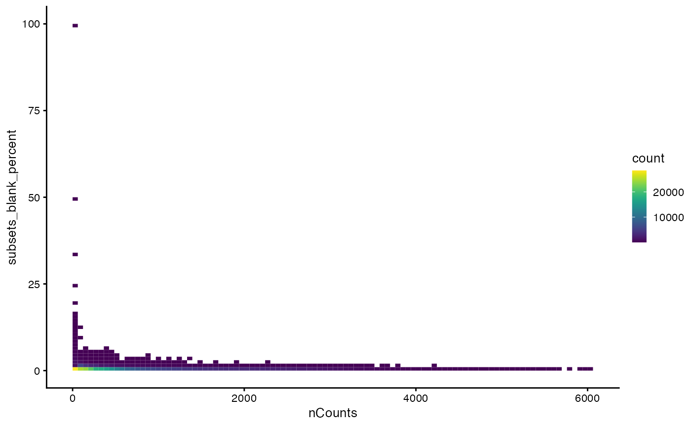
The outliers in percentage of blank counts have low total counts. But there are some seemingly real cells with sizable nCounts which have a relatively high percentage of blank counts. Since the distribution of this percentage has a very long tail, we log transform it when finding outliers.
get_neg_ctrl_outliers <- function(col, sfe, nmads = 3, log = FALSE) {
inds <- colData(sfe)$nCounts > 0 & colData(sfe)[[col]] > 0
df <- colData(sfe)[inds,]
outlier_inds <- isOutlier(df[[col]], type = "higher", nmads = nmads, log = log)
outliers <- rownames(df)[outlier_inds]
col2 <- str_remove(col, "^subsets_")
col2 <- str_remove(col2, "_percent$")
new_colname <- paste("is", col2, "outlier", sep = "_")
colData(sfe)[[new_colname]] <- colnames(sfe) %in% outliers
sfe
}
sfe <- get_neg_ctrl_outliers("subsets_blank_percent", sfe, log = TRUE)What proportion of all cells are outliers?
mean(sfe$is_blank_outlier)
#> [1] 0.008944499What’s the cutoff for outlier?
min(sfe$subsets_blank_percent[sfe$is_blank_outlier])
#> [1] 2.303523Remove the outliers and empty cells:
(sfe <- sfe[, !sfe$is_blank_outlier & sfe$nCounts > 0])
#> class: SpatialFeatureExperiment
#> dim: 385 390348
#> metadata(0):
#> assays(1): counts
#> rownames(385): Comt Ldha ... Blank-36 Blank-37
#> rowData names(3): means vars cv2
#> colnames(390348): 10482024599960584593741782560798328923
#> 111551578131181081835796893618918348842 ...
#> 92389687374928708938472537234969690424
#> 96399783859933548456002372694492036651
#> colData names(18): fov volume ... total is_blank_outlier
#> reducedDimNames(0):
#> mainExpName: NULL
#> altExpNames(0):
#> spatialCoords names(2) : center_x center_y
#> imgData names(1): sample_id
#>
#> unit: full_res_image_pixels
#> Geometries:
#> colGeometries: centroids (POINT), cellSeg (POLYGON)
#>
#> Graphs:
#> sample01:There still are over 390,000 cells left after removing the outliers.
Genes
Here we look at the mean and variance of each gene:
rowData(sfe)$is_blank <- is_blank
plotRowData(sfe, x = "means", y = "is_blank") +
scale_y_log10() +
annotation_logticks(sides = "b")
Most genes display higher mean expression than blanks, but there is considerable overlap in the distribution, probably because some genes expressed at lower levels or in fewer cells are included.
Here the “real” genes and negative controls are plotted in different colors:
plotRowData(sfe, x = "means", y = "vars", colour_by = "is_blank") +
geom_abline(slope = 1, intercept = 0, color = "red") +
scale_x_log10() + scale_y_log10() +
annotation_logticks() +
coord_equal()
The red line \(y = x\) is expected when the data follows a Poisson distribution.
as.data.frame(rowData(sfe)[is_blank,]) |>
ggplot(aes(means, vars)) +
geom_point() +
geom_abline(slope = 1, intercept = 0, color = "red") +
scale_x_log10() + scale_y_log10() +
annotation_logticks() +
coord_equal()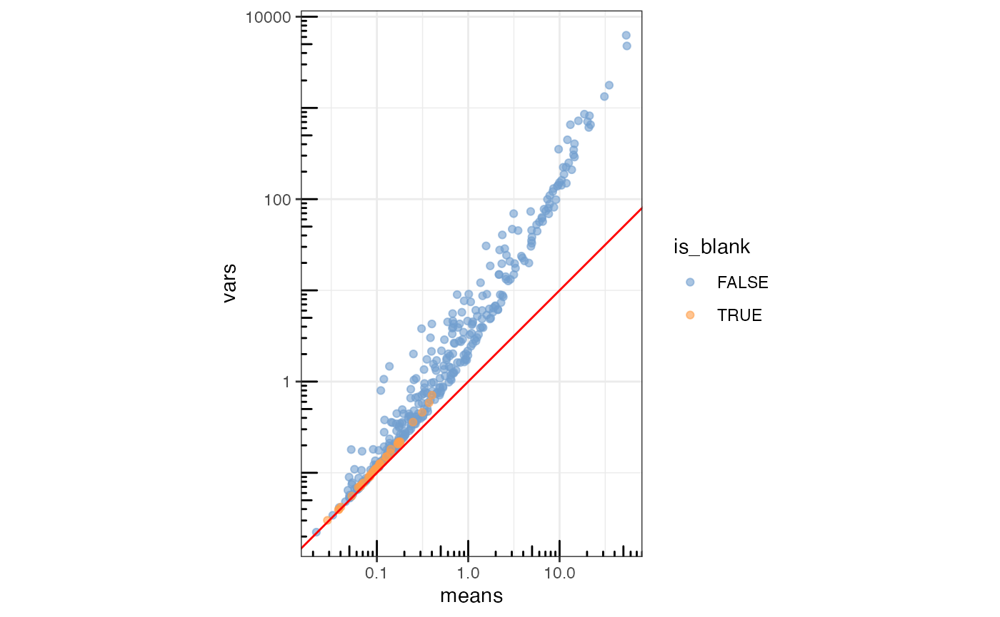
When zoomed in, the blanks are somewhat overdispersed.
Spatial autocorrelation of QC metrics
Again, we plot that zoomed in patch to visually inspect cell-cell contiguity:
plotGeometry(sfe, "cellSeg", bbox = bbox_use)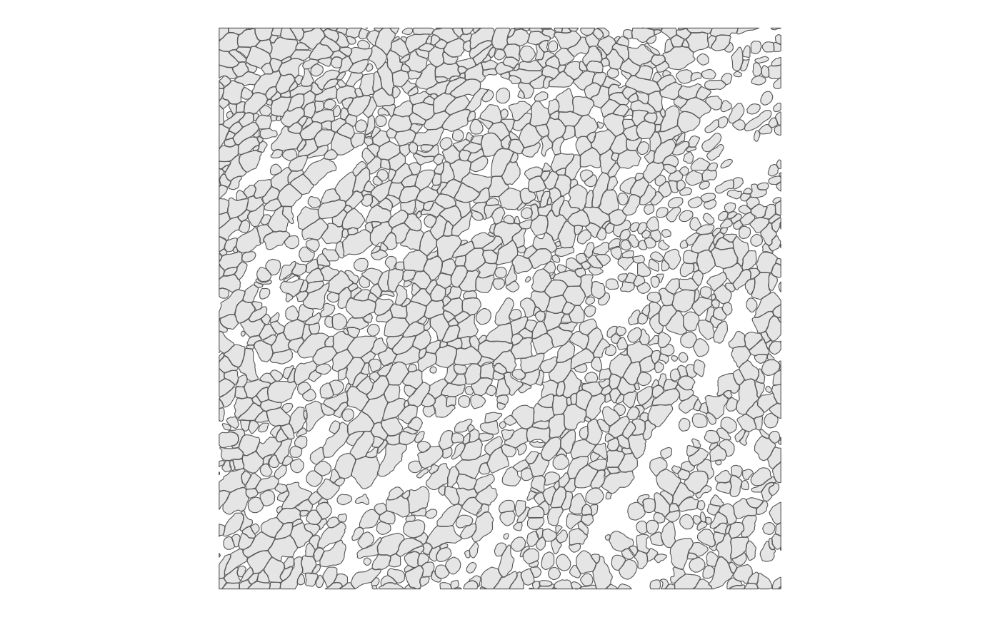
There are quite a few cells that are not contiguous to any other
cell, and cell segmentation is imperfect, so purely using
poly2nb() is problematic. In the next release, we might
implement a way to blend a polygon contiguity graph with some other
graph in case of singletons. For now, we use k nearest neighbors with
\(k = 5\), which seems like a
reasonable approximation of contiguity based on the visual
inspection.
As of Voyager 1.2.0 (Bioconductor 3.17),
findSpatialNeighbors() by default uses
BiocNeighbors for k nearest neighbors and distance
neighbors and saving the distances between neighbors. This bypasses the
most time consuming step in spdep when calculating distance
based edge weights, which is to compute distance, hence greatly speeding
up computation.
system.time(
colGraph(sfe, "knn5") <- findSpatialNeighbors(sfe, method = "knearneigh",
dist_type = "idw", k = 5,
style = "W")
)
#> user system elapsed
#> 32.001 0.149 32.153With the spatial neighborhood graph, we can compute Moran’s I for QC metrics.
sfe <- colDataMoransI(sfe, c("nCounts", "nGenes", "volume"),
colGraphName = "knn5")
colFeatureData(sfe)[c("nCounts", "nGenes", "volume"),]
#> DataFrame with 3 rows and 2 columns
#> moran_sample01 K_sample01
#> <numeric> <numeric>
#> nCounts -0.1084532 4.22513
#> nGenes -0.0922130 2.25923
#> volume -0.0195237 3.89406Unlike the other smFISH-based datasets on this website, nCounts and
nGenes have sizable negative Moran’s I’s, which is closer to 0 for
volume. It would be interesting to compare these metrics across
different tissues, as we add more datasets to SFEData in
future releases.
Also check local Moran’s I, since in that little patch we examined above, some regions may have more positive spatial autocorrelation.
sfe <- colDataUnivariate(sfe, type = "localmoran",
features = c("nCounts", "nGenes", "volume"),
colGraphName = "knn5")
plotLocalResult(sfe, "localmoran", c("nCounts", "nGenes", "volume"),
colGeometryName = "centroids", scattermore = TRUE,
ncol = 2, divergent = TRUE, diverge_center = 0)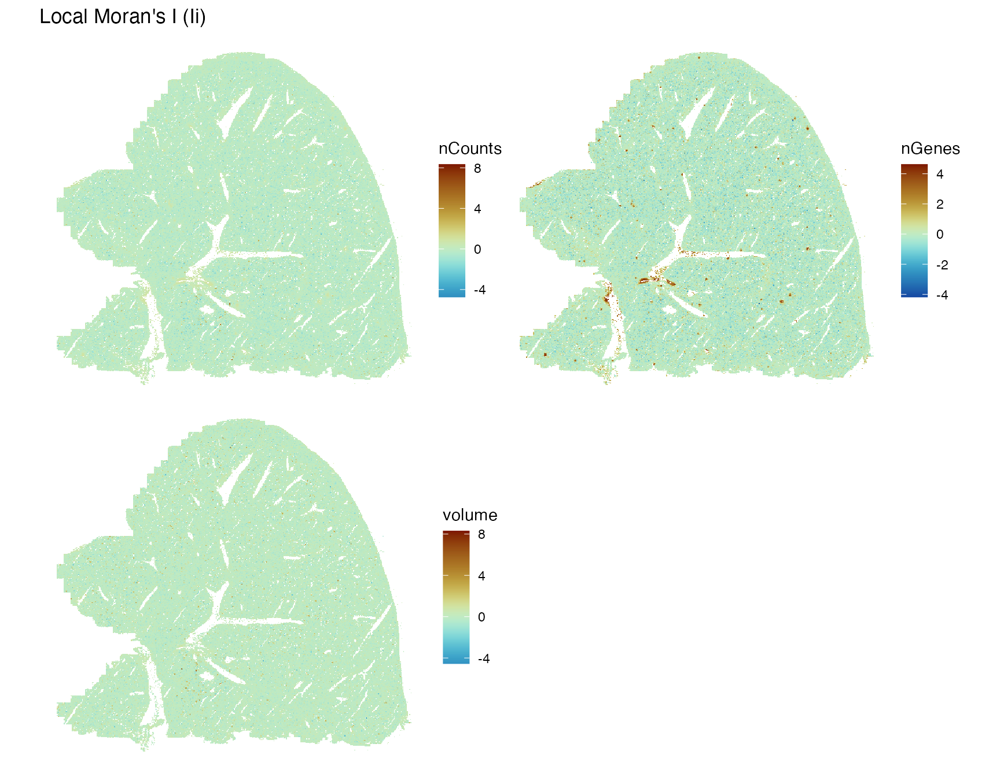
There are some niches around smaller blood vessels with positive local Moran’s I for nCounts and nGenes. This is most likely due to the more homogeneous endothelial cells compared to hepatocytes.
Moran’s I
sfe <- logNormCounts(sfe)
system.time(
sfe <- runMoransI(sfe, BPPARAM = MulticoreParam(2))
)
#> user system elapsed
#> 93.471 10.627 54.720It’s actually not as slow as I thought for almost 400,000 cells. How are Moran’s I’s distributed for real genes and blank probes?
plotRowData(sfe, x = "moran_sample01", y = "is_blank") +
geom_hline(yintercept = 0, linetype = 2)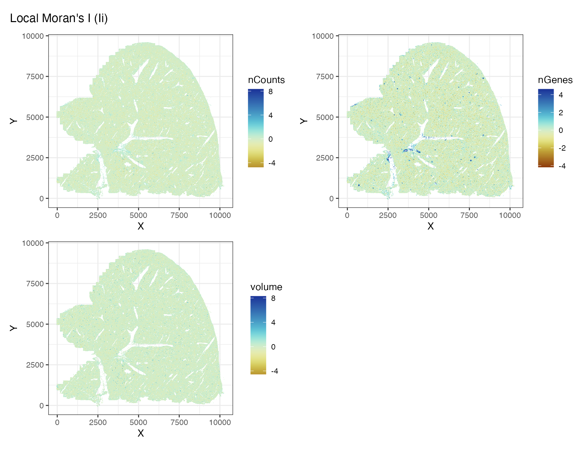
The blanks are clustered tightly around 0. The vast majority of real genes have positive spatial autocorrelation, some quite strong. But some genes have negative spatial autocorrelation, although it may or may not be statistically significant.
Plot the top genes with positive spatial autocorrelation:
top_moran <- rownames(sfe)[order(rowData(sfe)$moran_sample01, decreasing = TRUE)[1:6]]
plotSpatialFeature(sfe, top_moran, colGeometryName = "centroids", scattermore = TRUE,
ncol = 2)
Unlike in the other smFISH-based cancer datasets on this dataset, the genes with the highest Moran’s I highlight different histological regions. Some probably for zones in the hepatic lobule, and some for blood vessels. It would be interesting to compare spatial autocorrelation of marker genes among different tissues and cell types.
Negative Moran’s I means that nearby cells tend to be more dissimilar to each other. That would be hard to see when plotting the whole tissue section, so we will use that bounding box again. The gene with the most negative Moran’s I is compared to one with Moran’s I closest to 0.
bottom_moran <- rownames(sfe)[order(rowData(sfe)$moran_sample01)[1]]
bottom_abs_moran <- rownames(sfe)[order(abs(rowData(sfe)$moran_sample01))[1]]
plotSpatialFeature(sfe, c(bottom_moran, bottom_abs_moran),
colGeometryName = "cellSeg", bbox = bbox_use)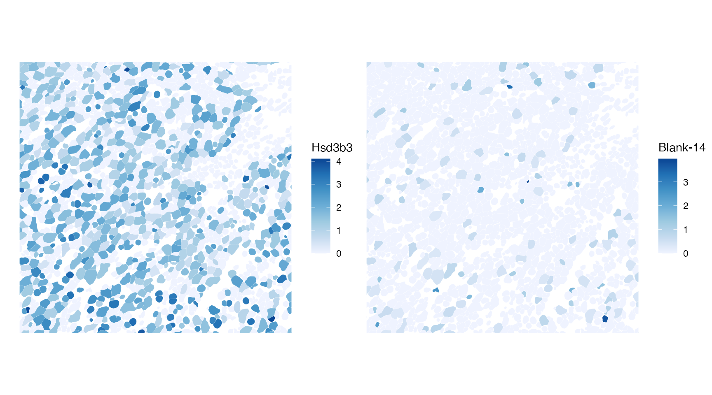
As expected, the feature with Moran’s I closest to 0 is a blank.
Spatial autocorrelation at larger length scales
The k nearest neighbor graph used above only concerns 5 cells around
each cell, which is a very small neighborhood, over a very small length
scale. In the current release of Voyager, a correlogram can
be computed to get a sense of the length scale of spatial
autocorrelation. However, since finding the lag values over higher and
higher orders of neighborhoods is very slow for such a large number of
cells for higher orders, the correlogram is not very helpful here. In
this section, we use some other methods involving binning to explore
spatial autocorrelation at larger length scales.
Binning
The sf package can create polygons in a grid, with which
we can bin the cells and their attributes and gene expressions. Here we
make a 100 by 100 hexagonal grid in the bounding box of the cell
centroids.
(bins <- st_make_grid(colGeometry(sfe, "centroids"), n = 100, square = FALSE))
#> Geometry set for 11165 features
#> Geometry type: POLYGON
#> Dimension: XY
#> Bounding box: xmin: -137.2225 ymin: -158.8407 xmax: 10396.09 ymax: 9708.547
#> CRS: NA
#> First 5 geometries:
#> POLYGON ((-85.58866 -69.40817, -137.2225 -39.59...
#> POLYGON ((-85.58866 109.4569, -137.2225 139.267...
#> POLYGON ((-85.58866 288.3219, -137.2225 318.132...
#> POLYGON ((-85.58866 467.1869, -137.2225 496.997...
#> POLYGON ((-85.58866 646.052, -137.2225 675.8628...Here we use this grid to bin the QC metrics by averaging the values from the cells. Since bins not completely covered by tissue have fewer cells, the mean may be less susceptible to edge effect than the sum, as bins near the edge will have lower sums, which may spuriously increase Moran’s I.
df <- cbind(colGeometry(sfe, "centroids"), colData(sfe)[,c("nCounts", "nGenes", "volume")])
df_binned <- aggregate(df, bins, FUN = mean)
# Remove bins not containing cells
df_binned <- df_binned[!is.na(df_binned$nCounts),]Plot the binned values:
# Not using facet_wrap to give each panel its own color scale
plts <- lapply(c("nCounts", "nGenes", "volume"), function(f) {
ggplot(df_binned[,f]) + geom_sf(aes(fill = .data[[f]]), linewidth = 0) +
scale_fill_distiller(palette = "Blues", direction = 1) + theme_void()
})
wrap_plots(plts, nrow = 2)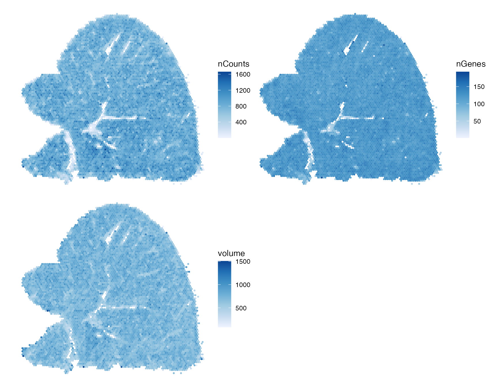
There’s an outlier bin not as evident when plotting single cells. There’s still some edge effect around blood vessels. This might be truly edge effect, or that endothelial cells tend to have lower values in all 3 variables here.
Then compute Moran’s I over the binned data, with contiguity
neighborhoods. zero.policy = TRUE because there are some
bins with no neighbors.
calculateMoransI(t(as.matrix(st_drop_geometry(df_binned[,c("nCounts", "nGenes", "volume")]))),
listw = listw, zero.policy = TRUE)
#> DataFrame with 3 rows and 2 columns
#> moran K
#> <numeric> <numeric>
#> nCounts 0.490837 5.21703
#> nGenes 0.422267 16.10323
#> volume 0.352221 4.78100At a larger length scale, Moran’s I becomes positive. Comparing Moran’s I across different sized bins can give a sense of the length scale of spatial autocorrelation. However, there are problems with binning to watch out for:
- Edge effect, especially when using the sum when binning
- Which function to use to aggregate the values when binning
- When using a rectangular grid, whether to use rook or queen neighbors. Rook means two cells are neighbors if they share an edge, while queen means they are neighbors even if they merely share a vertex.
While binning can greatly speed up computation of spatial autocorrelation metrics for larger datasets, it can be used for smaller datasets to find length scales of spatial autocorrelation. On the other hand, as seen here, Moran’s I can flip signs at different length scales, so for larger datasets, exploring spatial autocorrelation at the cell level would still be interesting.
Semivariogram
In geostatistical data, an underlying spatial process is sampled at
known locations. Kriging uses a Gaussian process to interpolate the
values between the sample locations, and the semivariogram is used to
model the spatial dependency between the locations as the covariance of
the Gaussian process. When not kriging, the semivariogram can be used as
an exploratory data analysis tool to find the length scale and
anisotropy of spatial autocorrelation. One of the classic R packages in
the geostatistical tradition is gstat,
which we use here to find semivariograms, defined as
\[ \gamma(t) = \frac 1 2 \mathrm{Var}(X_t - X_0), \]
where \(X\) is the value such as gene expression, and \(t\) is a spatial vector. \(X_0\) is the value at a location of interest, and \(X_t\) is the value lagged by \(t\). With positive spatial autocorrelation, the variance would be smaller among nearby values, so the variogram would increase with distance, eventually leveling off when the distance is beyond the length scale of spatial autocorrelation. The “semi” comes from the 1/2.
The variogram is in Voyager v1.2.0 or higher (Bioconductor 3.17 or
later) and can be computed with the same runUnivariate()
function. See vignette
for variograms and variogram maps.
First we find an empirical variogram assuming that it’s the same in
all directions. Here the data is binned at distance intervals, so this
is much faster than the correlogram at the cell level. The
width argument controlls the bin size. The
cutoff argument is the maximum distance to consider. Here
we use the defaults. The first argument is a formula; covariates can be
specified, but is not done here.
With different widths and cutoffs, the variogram can be estimated at
different length scales. The gstat package can also fit a
model to the empirical variogram. See vgm() for the
different types of models. The automap
package can choose a model for the user, and is used here and in
Voyager.
Unfortunately, gstat doesn’t scale to 400,000 cells,
although it worked for 100,000 cells in the other smFISH-based datasets
on this website. But since the variogram is used to explore larger
length scales here anyway, we use the binned data here, but the problems
with binning will apply.
# as_Spatial since automap uses old fashioned sp, the predecessor of sf
v <- autofitVariogram(nCounts ~ 1, as_Spatial(df_binned))
plot(v)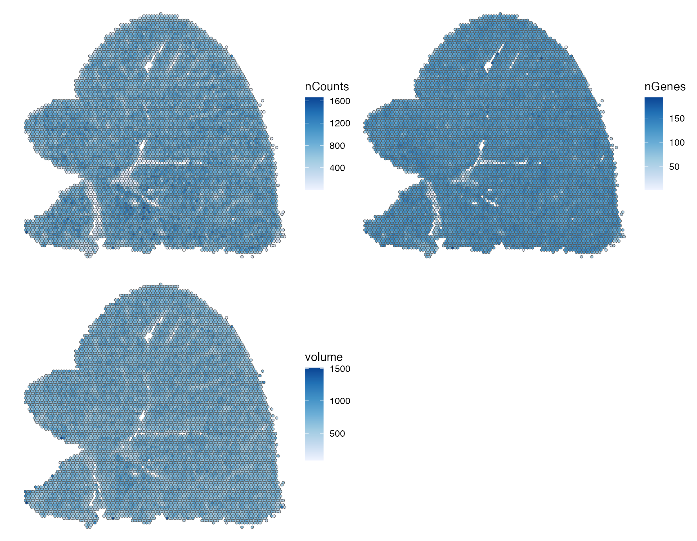
The numbers in this plot are the number of pairs in each distance bin. The variogram is not 0 at 0 distance; this is the variance within the bin size, called the nugget. The variogram levels off at greater distance, and the value of the variogram where is levels off is the sill. Range is where the variogram is leveling off, indicating length scale of spatial autocorrelation; the range from visual inspection appears closer to 1000 while the model somehow indicates 423.
A variogram map can be made to see how spatial autocorrelation may differ in different directions, i.e. anisotropy
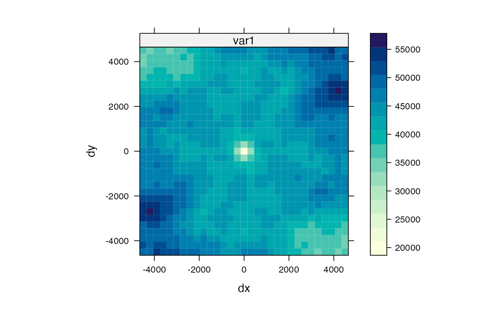
Here apparently there’s no anisotropy at shorter length scales, but there may be some artifact from the hexagonal bins. Going beyond 2000 (whatever unit), the variance drops at the northwest and southeast direction but not in other directions, perhaps related to the repetitiveness of the hepatic lobules and the general NE/SW direction of the blood vessels seen in the previous plots.
The variogram can also be calculated at specified angles, here selected as sides of the hexagon:
v3 <- variogram(nCounts ~ 1, df_binned, alpha = c(30, 90, 150))
v3_model <- fit.variogram(v3, vgm("Ste"))
plot(v3, v3_model)
The variogram rises when going beyond 2000 at 30 and 90 degrees and
drops at 150 degrees. This is consistent with the variogram map. These
differences are averaged out in the omni-directional variogram.
gstat does not fit anisotropy parameters, so the fitted
curve is omni-directional. It fits pretty well below 2000. This is only
for nCounts, and may differ for other QC metrics and genes. What if
anisotropy varies in space? A problem with the variogram is that it’s
global, giving one result for the entire dataset, albeit more nuanced
than just a number as in Moran’s I, because kriging assumes that the
data is intrinsically stationary, meaning that the same variogram model
applies everywhere, and that spatial dependence only depends on lag
between two observations.
Voyager 1.2.0 and above implements ggplot2 based
plotting functions to make better looking and more customizable plots of
the variograms for SFE objects. However, the binned data is not in an
SFE object. We are considering writing a method to spatially bin all
cell level data in an SFE object for Bioconductor 3.18. Here
gstat is using lattice, a predecessor of
ggplot2 to make facetted plots and has been superseded by
ggplot2. gstat is one of the oldest R packages
still on CRAN, dating back to the days of S (prequel of R), although its
oldest archive on CRAN is from 2003. spdep is also really
old; its oldest archive on CRAN is from 2002, but it’s still in active
development. In using these time honored packages and methods (Moran’s I
and Geary’s C themselves date back to the 1950s and their modern form
date back to 1969 (Cliff and Ord 1969; Bivand
2013)) on the cool new spatial transcriptomics dataset, we are
participating in a glorious tradition, which we will further develop as
a spatial analysis tradition forms around spatial -omics data
analysis.
PCA for larger datasets
There are many ways to do PCA in R, and the BiocSingular
package makes a number of different methods available with a consistent
user interface, and it supports out of memory data in
DelayedArray. According to this benchmark,
stats::prcomp() shipped with R is rather slow for larger
datasets. The fastest methods are irlba::irlba() and
RSpectra::svds(), and the former is supported by
BiocSingular. So here we use IRLBA and see how long it
takes. Many PCA algorithms involve repeated matrix multiplications. R
does not come with optimized BLAS and LAPACK, for portability reasons.
However, the BLAS and LAPACK used by R can be changed to an optimized
one (here’s how
to do it), which will speed up matrix multiplication.
set.seed(29)
system.time(
sfe <- runPCA(sfe, ncomponents = 20, subset_row = !is_blank,
exprs_values = "logcounts",
scale = TRUE, BSPARAM = IrlbaParam())
)
#> user system elapsed
#> 17.060 0.864 17.943
gc()
#> used (Mb) gc trigger (Mb) limit (Mb) max used (Mb)
#> Ncells 16650385 889.3 32047515 1711.6 NA 32047515 1711.6
#> Vcells 250335891 1910.0 490341584 3741.1 16384 490264348 3740.5That’s pretty quick for almost 400,000 cells, but there aren’t that many genes here. Use the elbow plot to see variance explained by each PC:
ElbowPlot(sfe)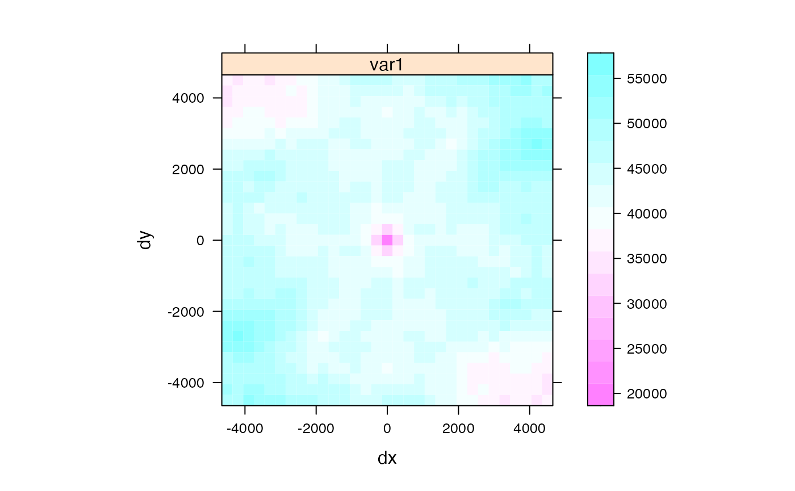
Plot top gene loadings in each PC
plotDimLoadings(sfe)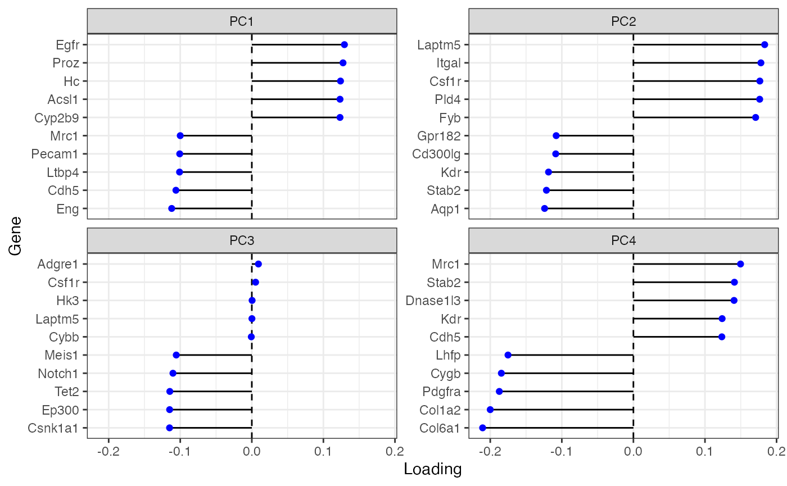
Many of these genes seem to be related to the endothelium.
Plot the first 4 PCs in space
spatialReducedDim(sfe, "PCA", 4, colGeometryName = "centroids", scattermore = TRUE,
divergent = TRUE, diverge_center = 0)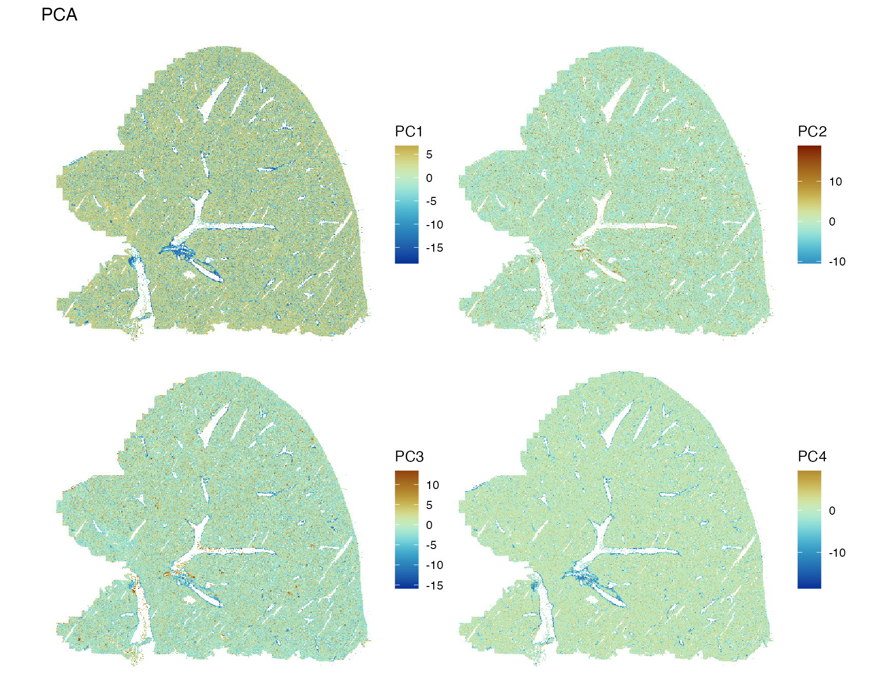
PC1 and PC4 highlight the major blood vessels, while PC2 and PC3 have
less spatial structure. While in the CosMX and Xenium datasets on this
website, the top PCs have clear spatial structures despite the absence
of spatial information in non-spatial PCA because of clear spatial
compartments for some cell types, which does not seem to be the case in
this dataset except for the blood vessels. We have seen above that some
genes have strong spatial structures. There are some methods for
spatially informed PCA, such as MULTISPATI PCA (Dray, Saı̈d, and Débias 2008) in the adespatial
package, which seeks to maximize both variance (as in non-spatial PCA)
and Moran’s I on each PC. Unlike traditional PCs, where all eigenvalues,
signifying variance explained, are positive, MULTISPATI PCA can have
negative eigenvalues, which signify negative spatial autocorrelation.
The PCs from MULTISPATI PCA with positive eigenvalues are also more
spatially coherent than those from non-spatial PCA. For the CosMX and
Xenium datasets on this website, the spatial coherence from MULTISPATI
might not make a difference, but it might make a difference in this
dataset where non-spatial PCs don’t show as much spatial structure, at
least at the larger scale over the entire tissue section. Voyager 1.2.0
(Bioconductor 3.17) has a faster implementation of MULTISPATI PCA than
that of adespatial, and is demonstrated in this dataset in
another
vignette.
While PC2 and PC3 don’t seem to have large scale spatial structure, they may have more local spatial structure not obvious from plotting the entire section, so we zoom into the bounding box:
spatialReducedDim(sfe, "PCA", ncomponents = 2:3, colGeometryName = "cellSeg",
bbox = bbox_use, divergent = TRUE, diverge_center = 0)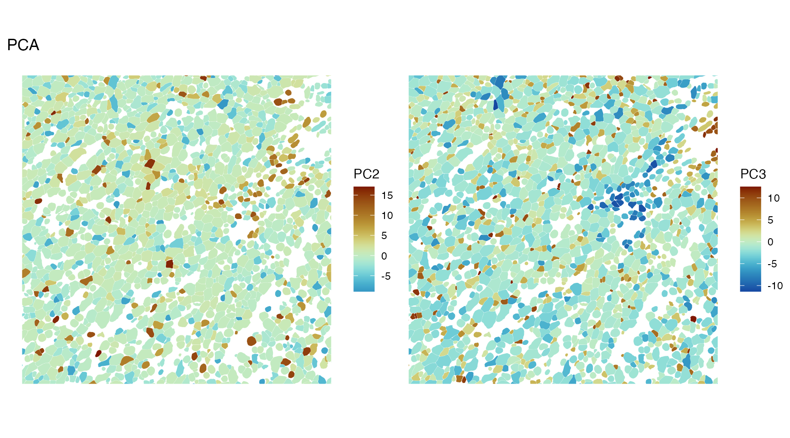
There’s some spatial structure in PC2 and PC3 at a smaller scale, perhaps some negative spatial autocorrelation.
Like global Moran’s I, PCA and MULTISPATI PCA return one result for the entire dataset. In contrast, geographically weighted PCA (GWPCA) (Harris et al. 2015) can account for spatial heterogeneity. GWPCA runs PCA at each spatial location using only the nearby locations weighed by a kernel. The different locations can have different PCs, and the results can be visualized with “winning variables” in each PC, i.e. plotting which feature has the highest loading in each PC in space. This most likely doesn’t scale to 400,000 cells, but it would still be interesting when performed on spatially binned data. GWPCA might be added in Bioconductor 3.18 and would require some changes in the user interface, because GWPCA is about the features rather than cell embeddings.
More challenges from large datasets
Here, despite the numerous cells, the data was loaded into memory.
What if the data doesn’t fit into memory? We might write a new vignette
with DelayedArray demonstrating out of memory data analysis
for Bioconductor 3.18. This is already supported by
SingleCellExperiment, which SFE inherits from. However, the
geometries, graphs, and local results can take up a lot memory as well.
These can possibly be stored in SQL databases and operated on with SQLDataFrame.
The geometric operations can be handled by sedona,
although the options are limited compared to GEOS, which performs
geometric operations behind the scene for sf.
Another question can be raised about large spatial transcriptomics data: Is it still a good idea to analyze the entire dataset at once? There must be many interesting and unique neighborhoods that might not get the attention they deserve when the whole dataset is analyzed at once. After all, in the geographical space, national level data is usually not analyzed at the block resolution, although a reason for this is privacy of the subjects. County resolution is often used, but there aren’t hundreds of thousands of counties. Many analyses are done for cities and counties with neighborhood resolution; using the largest geographical unit isn’t always the most relevant. Back to histological space: How to aggregate cells into larger spatial units? How to decide which scale of spatial units (analogous to nation vs state vs county and etc) is relevant? We have traditional anatomical ontologies, such as from the Allen Brain Atlas, but this isn’t available for all tissues. Also, with more single cell -omics data, the traditional ontologies can be improved.
Furthermore, there are 3D thick section single cell resolution
spatial transcriptomics data, such as from STARmap (X. Wang et al. 2018) and EASI-FISH (Y. Wang et al. 2021), although the vast
majority of spatial -omics data are from thin sections pretty much
de facto 2D. As we mostly live on the surface of Earth, there
are many more 2D geospatial resources than 3D. However, some methods can
in principle be applied to 3D and the existing software primarily made
for 2D data might work. For example, GEOS supports 3D data, so in
principle 3D geometries in sf should work, although there’s
little documentation on this. Also, k nearest neighbor, Moran’s I,
variograms, and etc. should in principle work in 3D, and
gstat officially supports 3D. These are more challenges
related to 3D data:
- Even when multiple z-planes are imaged, the resolution is much lower in the z direction than the x and y directions. Then should the z-plane be treated as an attribute or as a coordinate?
- How to make static plots for 3D data for publications? This is more complicated than plotting z-planes separately, since a 3D block can be sectioned from any other direction. Also for interactive visualization, we need to somehow see through the tissue.
Finally, the geospatial tradition is only one tradition relevant to
large spatial data, and at present Voyager only works with
vector data. We are uncertain whether raster should be added in a later
version, and there are existing tools for large raster data as well,
such as TileDB. Other
traditions can be relevant, such as astronomy and image processing, but
those are beyond the scope of this package.
Session Info
sessionInfo()
#> R version 4.3.3 (2024-02-29)
#> Platform: x86_64-apple-darwin20 (64-bit)
#> Running under: macOS Ventura 13.6.6
#>
#> Matrix products: default
#> BLAS: /Library/Frameworks/R.framework/Versions/4.3-x86_64/Resources/lib/libRblas.0.dylib
#> LAPACK: /Library/Frameworks/R.framework/Versions/4.3-x86_64/Resources/lib/libRlapack.dylib; LAPACK version 3.11.0
#>
#> locale:
#> [1] en_US.UTF-8/en_US.UTF-8/en_US.UTF-8/C/en_US.UTF-8/en_US.UTF-8
#>
#> time zone: UTC
#> tzcode source: internal
#>
#> attached base packages:
#> [1] stats4 stats graphics grDevices utils datasets methods
#> [8] base
#>
#> other attached packages:
#> [1] SpatialFeatureExperiment_1.3.0 automap_1.1-9
#> [3] BiocNeighbors_1.20.2 gstat_2.1-1
#> [5] BiocSingular_1.18.0 BiocParallel_1.36.0
#> [7] spdep_1.3-3 sf_1.0-16
#> [9] spData_2.3.0 stringr_1.5.1
#> [11] patchwork_1.2.0 scater_1.30.1
#> [13] ggplot2_3.5.1 scuttle_1.12.0
#> [15] SpatialExperiment_1.12.0 SingleCellExperiment_1.24.0
#> [17] SummarizedExperiment_1.32.0 Biobase_2.62.0
#> [19] GenomicRanges_1.54.1 GenomeInfoDb_1.38.8
#> [21] IRanges_2.36.0 S4Vectors_0.40.2
#> [23] BiocGenerics_0.48.1 MatrixGenerics_1.14.0
#> [25] matrixStats_1.3.0 SFEData_1.4.0
#> [27] Voyager_1.4.0
#>
#> loaded via a namespace (and not attached):
#> [1] later_1.3.2 bitops_1.0-7
#> [3] filelock_1.0.3 tibble_3.2.1
#> [5] xts_0.13.2 lifecycle_1.0.4
#> [7] edgeR_4.0.16 lattice_0.22-6
#> [9] magrittr_2.0.3 limma_3.58.1
#> [11] sass_0.4.9 rmarkdown_2.26
#> [13] jquerylib_0.1.4 yaml_2.3.8
#> [15] httpuv_1.6.15 sp_2.1-4
#> [17] cowplot_1.1.3 RColorBrewer_1.1-3
#> [19] DBI_1.2.2 abind_1.4-5
#> [21] zlibbioc_1.48.2 purrr_1.0.2
#> [23] RCurl_1.98-1.14 rappdirs_0.3.3
#> [25] GenomeInfoDbData_1.2.11 ggrepel_0.9.5
#> [27] irlba_2.3.5.1 terra_1.7-71
#> [29] units_0.8-5 RSpectra_0.16-1
#> [31] pkgdown_2.0.9 DelayedMatrixStats_1.24.0
#> [33] codetools_0.2-20 DelayedArray_0.28.0
#> [35] tidyselect_1.2.1 farver_2.1.1
#> [37] ScaledMatrix_1.10.0 viridis_0.6.5
#> [39] BiocFileCache_2.10.2 jsonlite_1.8.8
#> [41] e1071_1.7-14 systemfonts_1.0.6
#> [43] tools_4.3.3 ggnewscale_0.4.10
#> [45] ragg_1.3.1 Rcpp_1.0.12
#> [47] glue_1.7.0 gridExtra_2.3
#> [49] SparseArray_1.2.4 xfun_0.43
#> [51] dplyr_1.1.4 HDF5Array_1.30.1
#> [53] withr_3.0.0 BiocManager_1.30.23
#> [55] fastmap_1.1.1 boot_1.3-30
#> [57] rhdf5filters_1.14.1 bluster_1.12.0
#> [59] fansi_1.0.6 digest_0.6.35
#> [61] rsvd_1.0.5 R6_2.5.1
#> [63] mime_0.12 textshaping_0.3.7
#> [65] colorspace_2.1-0 wk_0.9.1
#> [67] scattermore_1.2 RSQLite_2.3.6
#> [69] hexbin_1.28.3 utf8_1.2.4
#> [71] generics_0.1.3 intervals_0.15.4
#> [73] FNN_1.1.4 class_7.3-22
#> [75] httr_1.4.7 htmlwidgets_1.6.4
#> [77] S4Arrays_1.2.1 pkgconfig_2.0.3
#> [79] scico_1.5.0 gtable_0.3.5
#> [81] blob_1.2.4 XVector_0.42.0
#> [83] htmltools_0.5.8.1 scales_1.3.0
#> [85] png_0.1-8 knitr_1.45
#> [87] rjson_0.2.21 spacetime_1.3-1
#> [89] curl_5.2.1 proxy_0.4-27
#> [91] cachem_1.0.8 zoo_1.8-12
#> [93] rhdf5_2.46.1 BiocVersion_3.18.1
#> [95] KernSmooth_2.23-22 parallel_4.3.3
#> [97] vipor_0.4.7 AnnotationDbi_1.64.1
#> [99] desc_1.4.3 s2_1.1.6
#> [101] reshape_0.8.9 pillar_1.9.0
#> [103] grid_4.3.3 vctrs_0.6.5
#> [105] promises_1.3.0 dbplyr_2.5.0
#> [107] beachmat_2.18.1 xtable_1.8-4
#> [109] cluster_2.1.6 beeswarm_0.4.0
#> [111] evaluate_0.23 magick_2.8.3
#> [113] cli_3.6.2 locfit_1.5-9.9
#> [115] compiler_4.3.3 rlang_1.1.3
#> [117] crayon_1.5.2 labeling_0.4.3
#> [119] classInt_0.4-10 plyr_1.8.9
#> [121] fs_1.6.4 ggbeeswarm_0.7.2
#> [123] stringi_1.8.4 stars_0.6-5
#> [125] viridisLite_0.4.2 deldir_2.0-4
#> [127] munsell_0.5.1 Biostrings_2.70.3
#> [129] Matrix_1.6-5 ExperimentHub_2.10.0
#> [131] sparseMatrixStats_1.14.0 bit64_4.0.5
#> [133] Rhdf5lib_1.24.2 KEGGREST_1.42.0
#> [135] statmod_1.5.0 shiny_1.8.1.1
#> [137] highr_0.10 interactiveDisplayBase_1.40.0
#> [139] AnnotationHub_3.10.1 igraph_2.0.3
#> [141] memoise_2.0.1 bslib_0.7.0
#> [143] bit_4.0.5